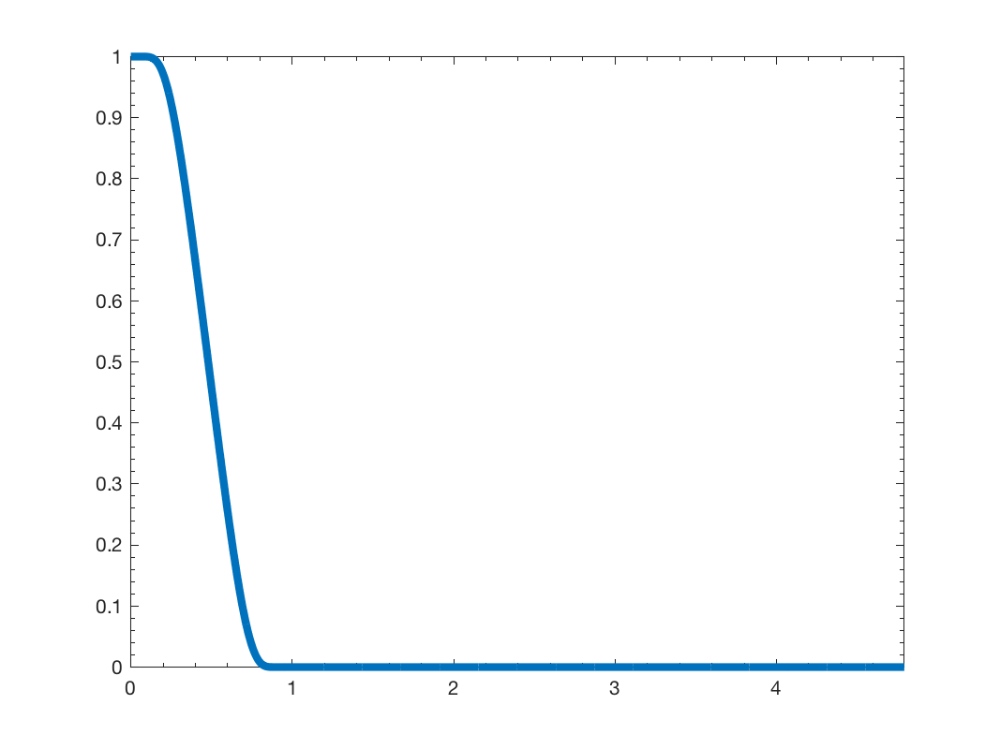

g = gsp_design_expwin(G); g = gsp_design_expwin(G, bmax); g = gsp_design_expwin(G, bmax, a);
| G | Graph structure |
| bmax | Maximum relative band (default 0.2) |
| a | Slope parameter (default 1). |
| g | filter |
This function design the following filter:
where \(s(x)\) is the step function
It uses a clever exponential construction to obtain an infinitely differentiable function that is band limited!
This function will compute the maximum eigenvalue of the laplacian. To be more efficient, you can precompute it using:
G = gsp_estimate_lmax(G);
Example:
Nf = 4; G = gsp_sensor(100); G = gsp_estimate_lmax(G); g = gsp_design_expwin(G); gsp_plot_filter(G,g);